library(GenomicRanges)Genomic Ranges
Learning Objectives
- Learn to use the GenomicRanges package in R
- Import genomic data as GRanges objects
- Perform operations on GRanges objects
The GenomicRanges package defines general purpose containers, known as GRanges objects, for storing and manipulating genomic data. GRanges objects store genomic co-ordinates and associated metadata. They are used in many Bioconductor packages to analyse genomic data.
The types of data that can be stored in a GRanges object include:
- Genomic intervals (e.g. gene models, ChIP-seq peaks, regulatory features)
- Genomic signals (e.g. sequencing read depth, GC content)
- Genomic variations (e.g. SNPs, INDELs)
GRanges are built on the IRanges function which is a general purpose object in R for representing numeric intervals.
Load the GenomicRanges library and take a look at the documentation for the IRanges() and GRanges() functions.
?IRanges
?GRangesDiscussion:
- What are the minimal required inputs for
IRanges()? - What are the minimal required inputs for
GRanges()? - What other columns can be included in a GRanges object?
We can use the GRanges() function to generate a sample of genomic intervals. The IRanges() function creates numeric intervals which are passed to GRanges() and understood as genomic co-ordinates.
## Create a genomicRanges object from scratch
gr <- GRanges(seqnames = c("chr2", "chr2", "chr6", "chr6", "chr10"),
ranges = IRanges(start = c(100, 150, 300, 350, 500),
end = c(200, 300, 400, 500, 600)),
names=c(1, 2, 3, 4, 5))
grGRanges object with 5 ranges and 1 metadata column:
seqnames ranges strand | names
<Rle> <IRanges> <Rle> | <numeric>
[1] chr2 100-200 * | 1
[2] chr2 150-300 * | 2
[3] chr6 300-400 * | 3
[4] chr6 350-500 * | 4
[5] chr10 500-600 * | 5
-------
seqinfo: 3 sequences from an unspecified genome; no seqlengthsOur GRanges object contains 5 genomic intervals on 3 different chromosomes. We have included a column called names to store the name of each interval but we could have included any other metadata columns as well.
We can use the sample(), rep() and seq() functions in base R to generate sample co-ordinates. Try playing around with these functions.
## Create a second GRanges object with different co-ordinates
gr2 <- GRanges(seqnames = paste0("chr", seq(2, 10, 2)),
ranges = IRanges(start = sample(1000000, 5) ,
width = rep(500, 5)),
strand = c(rep("+", 3), rep("-", 2)),
names=seq(1, 5)
)
gr2GRanges object with 5 ranges and 1 metadata column:
seqnames ranges strand | names
<Rle> <IRanges> <Rle> | <integer>
[1] chr2 62999-63498 + | 1
[2] chr4 966922-967421 + | 2
[3] chr6 663790-664289 + | 3
[4] chr8 713639-714138 - | 4
[5] chr10 710727-711226 - | 5
-------
seqinfo: 5 sequences from an unspecified genome; no seqlengthsWe can store multiple GRanges objects in a GRangeslist.
For instance, say we had two sets of candidate genes from two different, but related experiments. We can place these together in a list and apply the same operations on both sets at the same time.
## Create a GRanges list
gl <- GRangesList("Experiment_1" = gr, "Experiment_2" = gr2)
glGRangesList object of length 2:
$Experiment_1
GRanges object with 5 ranges and 1 metadata column:
seqnames ranges strand | names
<Rle> <IRanges> <Rle> | <numeric>
[1] chr2 100-200 * | 1
[2] chr2 150-300 * | 2
[3] chr6 300-400 * | 3
[4] chr6 350-500 * | 4
[5] chr10 500-600 * | 5
-------
seqinfo: 5 sequences from an unspecified genome; no seqlengths
$Experiment_2
GRanges object with 5 ranges and 1 metadata column:
seqnames ranges strand | names
<Rle> <IRanges> <Rle> | <numeric>
[1] chr2 62999-63498 + | 1
[2] chr4 966922-967421 + | 2
[3] chr6 663790-664289 + | 3
[4] chr8 713639-714138 - | 4
[5] chr10 710727-711226 - | 5
-------
seqinfo: 5 sequences from an unspecified genome; no seqlengthsAccessor functions for GRanges objects
The GRanges object has several accessor functions to quickly extract information about the data:
The length() function gives the number of genomic intervals in the GRanges object.
length(gr)[1] 5We can access the individual components of the GRanges object with the following functions:
## Get the names of sequences (e.g. chromosomes) represented in the GRanges object
seqnames(gr)factor-Rle of length 5 with 3 runs
Lengths: 2 2 1
Values : chr2 chr6 chr10
Levels(3): chr2 chr6 chr10The output data type is factor-Rle. Rle stands for run-length encoding and is a way to store repeated values more efficiently. In this case, the chromosome names are repeated across multiple intervals so they are stored as a factor with the number of repeats. If we wanted to convert this to a vector we can use the as.factor() function.
## Get the names of sequences (e.g. chromosomes) as a factor vector
seqnames(gr) |> as.factor()[1] chr2 chr2 chr6 chr6 chr10
Levels: chr2 chr6 chr10## Get the start positions
start(gr2)[1] 62999 966922 663790 713639 710727## Get the end positions
end(gr2)[1] 63498 967421 664289 714138 711226## Get the strand information
strand(gr2)factor-Rle of length 5 with 2 runs
Lengths: 3 2
Values : + -
Levels(3): + - *## Get the size of each genomic interval
width(gr)[1] 101 151 101 151 101The GRanges object also contains metadata columns with additional information about each genomic interval. We can assign and retrieve metadata with the $ operator.
## Create a new column to represent GC content (A fraction between 1 and 0)
gr$GC <- seq(1, 0, length = length(gr))
grGRanges object with 5 ranges and 2 metadata columns:
seqnames ranges strand | names GC
<Rle> <IRanges> <Rle> | <numeric> <numeric>
[1] chr2 100-200 * | 1 1.00
[2] chr2 150-300 * | 2 0.75
[3] chr6 300-400 * | 3 0.50
[4] chr6 350-500 * | 4 0.25
[5] chr10 500-600 * | 5 0.00
-------
seqinfo: 3 sequences from an unspecified genome; no seqlengthsWe can access the metadata columns as a dataframe with the mcols() function.
## Fetch the metadata columns as a DataFrame
mcols(gr)DataFrame with 5 rows and 2 columns
names GC
<numeric> <numeric>
1 1 1.00
2 2 0.75
3 3 0.50
4 4 0.25
5 5 0.00Vector operations on GRanges objects
GRanges objects work like a lot of other vector objects in R. This means you can use many of the base R functions to subset, combine, sort and compare GRanges.
## Select specific intervals with square bracket notation
gr3 <- gr[c(5, 4, 3)]
gr3GRanges object with 3 ranges and 2 metadata columns:
seqnames ranges strand | names GC
<Rle> <IRanges> <Rle> | <numeric> <numeric>
[1] chr10 500-600 * | 5 0.00
[2] chr6 350-500 * | 4 0.25
[3] chr6 300-400 * | 3 0.50
-------
seqinfo: 3 sequences from an unspecified genome; no seqlengths## Sort a Granges object by seqname and range
sort(gr3)GRanges object with 3 ranges and 2 metadata columns:
seqnames ranges strand | names GC
<Rle> <IRanges> <Rle> | <numeric> <numeric>
[1] chr6 300-400 * | 3 0.50
[2] chr6 350-500 * | 4 0.25
[3] chr10 500-600 * | 5 0.00
-------
seqinfo: 3 sequences from an unspecified genome; no seqlengths## Concatenate two GRanges into one object
c(gr, gr2)GRanges object with 10 ranges and 2 metadata columns:
seqnames ranges strand | names GC
<Rle> <IRanges> <Rle> | <numeric> <numeric>
[1] chr2 100-200 * | 1 1.00
[2] chr2 150-300 * | 2 0.75
[3] chr6 300-400 * | 3 0.50
[4] chr6 350-500 * | 4 0.25
[5] chr10 500-600 * | 5 0.00
[6] chr2 62999-63498 + | 1 NA
[7] chr4 966922-967421 + | 2 NA
[8] chr6 663790-664289 + | 3 NA
[9] chr8 713639-714138 - | 4 NA
[10] chr10 710727-711226 - | 5 NA
-------
seqinfo: 5 sequences from an unspecified genome; no seqlengths## Subset a GRanges object to get minus strand intervals only
subset(gr2, strand(gr2) == "-")GRanges object with 2 ranges and 1 metadata column:
seqnames ranges strand | names
<Rle> <IRanges> <Rle> | <integer>
[1] chr8 713639-714138 - | 4
[2] chr10 710727-711226 - | 5
-------
seqinfo: 5 sequences from an unspecified genome; no seqlengths## Split GRanges into a GRangesList by chromosome
split(gr, seqnames(gr))GRangesList object of length 3:
$chr2
GRanges object with 2 ranges and 2 metadata columns:
seqnames ranges strand | names GC
<Rle> <IRanges> <Rle> | <numeric> <numeric>
[1] chr2 100-200 * | 1 1.00
[2] chr2 150-300 * | 2 0.75
-------
seqinfo: 3 sequences from an unspecified genome; no seqlengths
$chr6
GRanges object with 2 ranges and 2 metadata columns:
seqnames ranges strand | names GC
<Rle> <IRanges> <Rle> | <numeric> <numeric>
[1] chr6 300-400 * | 3 0.50
[2] chr6 350-500 * | 4 0.25
-------
seqinfo: 3 sequences from an unspecified genome; no seqlengths
$chr10
GRanges object with 1 range and 2 metadata columns:
seqnames ranges strand | names GC
<Rle> <IRanges> <Rle> | <numeric> <numeric>
[1] chr10 500-600 * | 5 0
-------
seqinfo: 3 sequences from an unspecified genome; no seqlengthsFurther Learning
You may be wondering why we have gone back to using a lot of base R functions when the Tidyverse style of coding is much more intuitive and easier to read. The GenomicRanges package was developed before the Tidyverse and uses base R functions at its core.
The TidyOmics project has started to develop packages to manipulate genomic data in a tidyverse style.
One of these packages is plyranges, a tidyverse style interface to GRanges objects. It has many of the same functions as GenomicRanges but uses Tidyverse style verbs instead of base R functions.
The TidyOmics packages are still developing and not yet widely used but they are worth keeping an eye on as they will make working with genomic data much easier in the future.
Challenge:
Extract the GRanges in gr with >=0.5 GC content and split them into a list for each chromosome.
Concatenate the GRanges in gr and gr2 and extract the intervals on chr2.
Solution.
Solution:
- Extract the GRanges in gr with >=0.5 GC content and split them into a list for each chromosome.
gr_subset = subset(gr, GC>=0.5)
split(gr_subset, seqnames(gr_subset))GRangesList object of length 3:
$chr2
GRanges object with 2 ranges and 2 metadata columns:
seqnames ranges strand | names GC
<Rle> <IRanges> <Rle> | <numeric> <numeric>
[1] chr2 100-200 * | 1 1.00
[2] chr2 150-300 * | 2 0.75
-------
seqinfo: 3 sequences from an unspecified genome; no seqlengths
$chr6
GRanges object with 1 range and 2 metadata columns:
seqnames ranges strand | names GC
<Rle> <IRanges> <Rle> | <numeric> <numeric>
[1] chr6 300-400 * | 3 0.5
-------
seqinfo: 3 sequences from an unspecified genome; no seqlengths
$chr10
GRanges object with 0 ranges and 2 metadata columns:
seqnames ranges strand | names GC
<Rle> <IRanges> <Rle> | <numeric> <numeric>
-------
seqinfo: 3 sequences from an unspecified genome; no seqlengths- Concatenate the GRanges in gr and gr2 and extract the intervals on chr2.
grc <- c(gr, gr2)
subset(grc, seqnames(grc) == "chr2")GRanges object with 3 ranges and 2 metadata columns:
seqnames ranges strand | names GC
<Rle> <IRanges> <Rle> | <numeric> <numeric>
[1] chr2 100-200 * | 1 1.00
[2] chr2 150-300 * | 2 0.75
[3] chr2 62999-63498 + | 1 NA
-------
seqinfo: 5 sequences from an unspecified genome; no seqlengthsFurther Learning
The GenomicRanges package has many more functions to manipulate and compare GRanges objects. Take a look at the documentation for the package to learn more about these functions and how to use them.
A convenient plotting function to visualise GRanges objects
Before we move on to performing operations on GRanges objects, it is useful to have a way to visualise the data. We are going to create two functions using ggplot2 to plot genomic intervals in a GRanges object.
The first function, pg(), plots up to 5 ranges in a GRanges object. The second function, pg2(), plots two GRanges objects side by side for comparison.
Don’t worry about the code, just know that you can use these functions to visualise your GRanges objects as we go through the operations in the next section.
library(ggplot2)
library(patchwork)
strand_cols <- c("+" = "#457B9D", "-" = "#E63946", "*" = "grey")
## Plots up to 5 ranges in a GRanges object
pg <- function(gr, n = 5, name = "names") {
title = paste("Genomic Ranges",deparse(substitute(gr)))
if(!name %in% names(mcols(gr))){
mcols(gr)[name] <- seq(1,length(gr))
}
df <- as.data.frame(gr[1:min(n,length(gr))])
ggplot(df, aes(xmin = start, xmax = end, y = as.character(!!sym(name)) , colour = strand)) +
geom_segment(aes(x = start, xend = end, y = as.character(!!sym(name)), yend = as.character(!!sym(name))), size = 5) +
labs(title = title, x = "Genomic Position", y = "Name") +
theme_minimal() +
scale_colour_manual(values = strand_cols) +
theme(panel.grid.major.y = element_blank()) +
facet_wrap(~seqnames, scales = "free", ncol = 1)
}
## plots the first range of 2 GRanges objects side by side for comparison
pg2 <- function(gr, gr2, n = 1, strand = "both", name = "names"){
if(!name %in% names(mcols(gr))){
mcols(gr)[name] <- seq(1,length(gr))
}
if(!name %in% names(mcols(gr2))){
mcols(gr2)[name] <- seq(1,length(gr2))
}
if(!"-" %in% strand(gr)){
strand = "+"
}
if(strand == "+"){
gr_plus <- subset(gr, strand(gr) %in% c("+","*"))[1:min(n,length(gr))]
gr <- gr_plus
} else if (strand == "-"){
gr_minus <- subset(gr, strand(gr) == "-")[1:min(n,length(gr))]
gr <- gr_minus
} else {
gr_plus <- subset(gr, strand(gr) %in% c("+","*"))[1:min(n,length(gr))]
gr_minus <- subset(gr, strand(gr) == "-")[1:min(n,length(gr))]
gr <- c(gr_plus, gr_minus)
}
if(!"-" %in% strand(gr2)){
strand = "+"
}
if(strand == "+"){
gr2_plus <- subset(gr2, strand(gr2) %in% c("+","*"))[1:min(n,length(gr2))]
gr2 <- gr2_plus
} else if (strand == "-"){
gr2_minus <- subset(gr2, strand(gr2) == "-")[1:min(n,length(gr2))]
gr2 <- gr2_minus
} else {
gr2_plus <- subset(gr2, strand(gr2) %in% c("+","*"))[1:min(n,length(gr2))]
gr2_minus <- subset(gr2, strand(gr2) == "-")[1:min(n,length(gr2))]
gr2 <- c(gr2_plus, gr2_minus)
}
gr <- as.data.frame(gr) |> dplyr::select(seqnames,start,end,strand,all_of(name)) |> dplyr::mutate(gr="before")
gr2 <- as.data.frame(gr2) |> dplyr::select(seqnames,start,end,strand,all_of(name)) |> dplyr::mutate(gr="after")
df <- rbind(gr,gr2) |> dplyr::mutate(gr=factor(gr,levels=c("before","after")))
ggplot(df, aes(xmin = start, xmax = end, y = !!sym(name), colour = strand)) +
geom_segment(aes(x = start, xend = end, y = as.character(!!sym(name)), yend = as.character(!!sym(name))), size = 5) +
labs(title = "Genomic Ranges Compare", x = "Genomic Position", y = "Name") +
scale_colour_manual(values = strand_cols) +
theme_bw() +
theme(panel.grid.major.y = element_blank()) +
facet_grid(gr~seqnames, scales = "free")
}Let’s try out pg() on our objects gr and gr2.
grGRanges object with 5 ranges and 2 metadata columns:
seqnames ranges strand | names GC
<Rle> <IRanges> <Rle> | <numeric> <numeric>
[1] chr2 100-200 * | 1 1.00
[2] chr2 150-300 * | 2 0.75
[3] chr6 300-400 * | 3 0.50
[4] chr6 350-500 * | 4 0.25
[5] chr10 500-600 * | 5 0.00
-------
seqinfo: 3 sequences from an unspecified genome; no seqlengthspg(gr)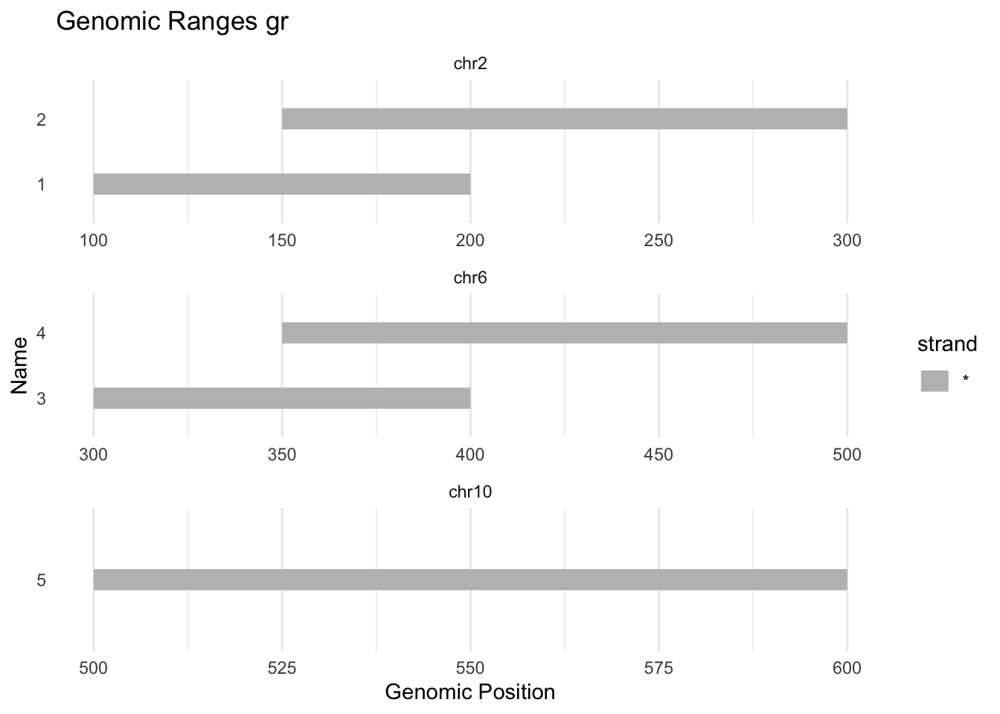
gr2GRanges object with 5 ranges and 1 metadata column:
seqnames ranges strand | names
<Rle> <IRanges> <Rle> | <integer>
[1] chr2 62999-63498 + | 1
[2] chr4 966922-967421 + | 2
[3] chr6 663790-664289 + | 3
[4] chr8 713639-714138 - | 4
[5] chr10 710727-711226 - | 5
-------
seqinfo: 5 sequences from an unspecified genome; no seqlengthspg(gr2)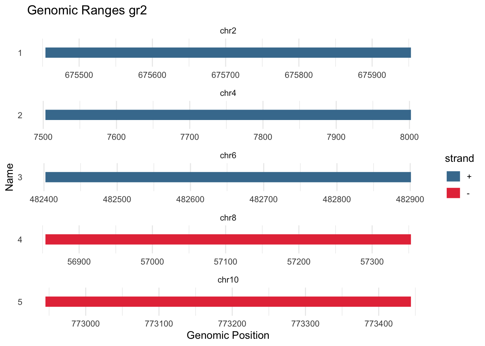
Range based operations on GRanges objects
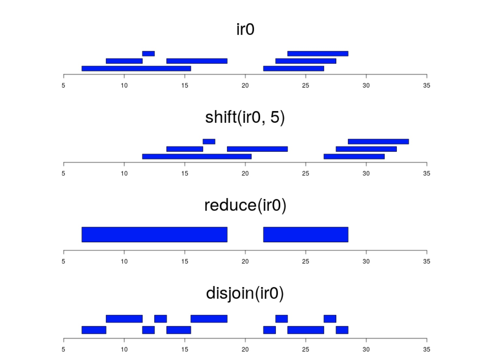
The GenomicRanges package has several functions to perform operations on GRanges objects based on their genomic intervals.
The shift() function shifts all the coordinates along the genome.
## Shift all the co-ordinates 100b to the right
gr.shift <- shift(gr, 100)
gr.shiftGRanges object with 5 ranges and 2 metadata columns:
seqnames ranges strand | names GC
<Rle> <IRanges> <Rle> | <numeric> <numeric>
[1] chr2 200-300 * | 1 1.00
[2] chr2 250-400 * | 2 0.75
[3] chr6 400-500 * | 3 0.50
[4] chr6 450-600 * | 4 0.25
[5] chr10 600-700 * | 5 0.00
-------
seqinfo: 3 sequences from an unspecified genome; no seqlengths## Use negative numbers to shift to the left
shift(gr, -10)GRanges object with 5 ranges and 2 metadata columns:
seqnames ranges strand | names GC
<Rle> <IRanges> <Rle> | <numeric> <numeric>
[1] chr2 90-190 * | 1 1.00
[2] chr2 140-290 * | 2 0.75
[3] chr6 290-390 * | 3 0.50
[4] chr6 340-490 * | 4 0.25
[5] chr10 490-590 * | 5 0.00
-------
seqinfo: 3 sequences from an unspecified genome; no seqlengthsIt can be quite tricky to keep track of the changes to the coordinates when performing operations on GRanges objects. The pg2() function can be used to visualise the changes to the coordinates after performing an operation.
pg2(gr, gr.shift, n=2)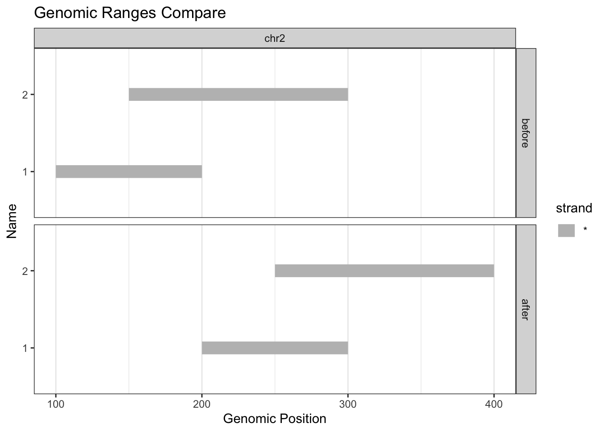
This shows us the first two intervals in gr and gr.shift side by side. We can see that the coordinates have been shifted to the right by 100bp.
The resize() function resizes the intervals to a specified width from the start coordinate.
## Resize all the intervals to 100bp
resize(gr, width = 100)GRanges object with 5 ranges and 2 metadata columns:
seqnames ranges strand | names GC
<Rle> <IRanges> <Rle> | <numeric> <numeric>
[1] chr2 100-199 * | 1 1.00
[2] chr2 150-249 * | 2 0.75
[3] chr6 300-399 * | 3 0.50
[4] chr6 350-449 * | 4 0.25
[5] chr10 500-599 * | 5 0.00
-------
seqinfo: 3 sequences from an unspecified genome; no seqlengthspg2(gr, resize(gr, width = 100), n = 2)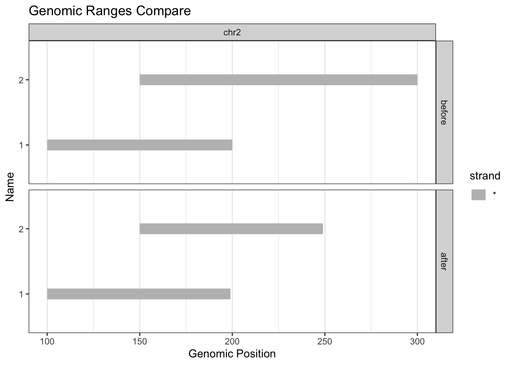
We can use the fix argument to specify which coordinate to use as the anchor point for resizing. By default, the start coordinate is used but we can change this to the end or the center of the interval.
## Anchor the centre of the end of the interval
resize(gr, width = 100, fix="end")GRanges object with 5 ranges and 2 metadata columns:
seqnames ranges strand | names GC
<Rle> <IRanges> <Rle> | <numeric> <numeric>
[1] chr2 101-200 * | 1 1.00
[2] chr2 201-300 * | 2 0.75
[3] chr6 301-400 * | 3 0.50
[4] chr6 401-500 * | 4 0.25
[5] chr10 501-600 * | 5 0.00
-------
seqinfo: 3 sequences from an unspecified genome; no seqlengthspg2(gr, resize(gr, width = 100, fix = "end"), n = 2)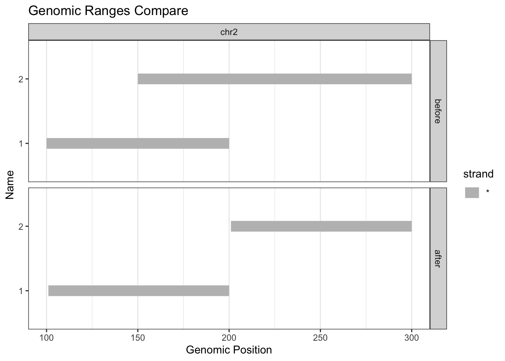
## Anchor the centre of the interval
resize(gr, width = 100, fix="center")GRanges object with 5 ranges and 2 metadata columns:
seqnames ranges strand | names GC
<Rle> <IRanges> <Rle> | <numeric> <numeric>
[1] chr2 100-199 * | 1 1.00
[2] chr2 175-274 * | 2 0.75
[3] chr6 300-399 * | 3 0.50
[4] chr6 375-474 * | 4 0.25
[5] chr10 500-599 * | 5 0.00
-------
seqinfo: 3 sequences from an unspecified genome; no seqlengthspg2(gr, resize(gr, width = 100, fix = "center"), n = 2)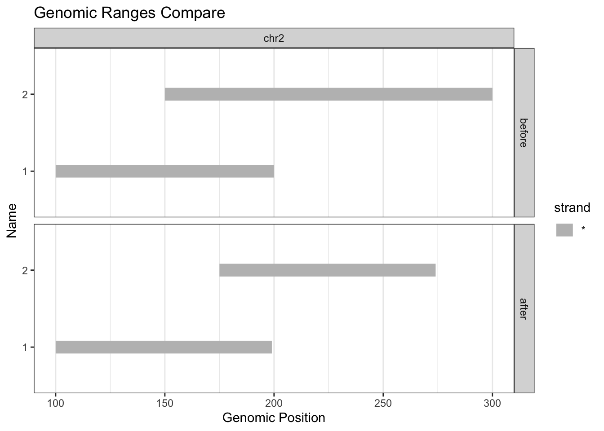
Our object gr does not have any strand information. The strand is denoted as * which means everything is treated as a forward strand interval.
Object gr2 does have strand information. Some, but not all, of the functions in GenomicRanges take strand into account when performing operations. You need to be careful and check the documentation for each function to see if strand is used in the calculations.
Try the following functions and see how the output changes when you use gr2 with strand information instead of gr.
## shift
shift(gr2, 100)GRanges object with 5 ranges and 1 metadata column:
seqnames ranges strand | names
<Rle> <IRanges> <Rle> | <integer>
[1] chr2 63099-63598 + | 1
[2] chr4 967022-967521 + | 2
[3] chr6 663890-664389 + | 3
[4] chr8 713739-714238 - | 4
[5] chr10 710827-711326 - | 5
-------
seqinfo: 5 sequences from an unspecified genome; no seqlengths## For stranded GRanges, pg2 will show 1 range from each strand
pg2(gr2, shift(gr2, 100))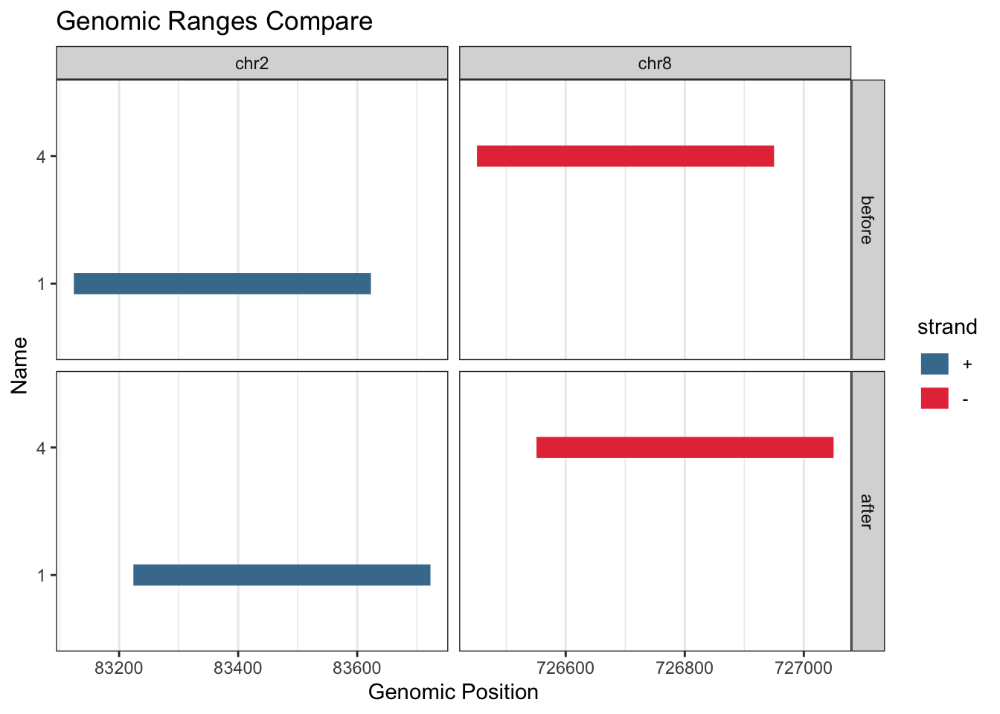
The shift() function does not take strand into account it just moves the coordinates along the genome.
resize(gr2, width = 100)GRanges object with 5 ranges and 1 metadata column:
seqnames ranges strand | names
<Rle> <IRanges> <Rle> | <integer>
[1] chr2 62999-63098 + | 1
[2] chr4 966922-967021 + | 2
[3] chr6 663790-663889 + | 3
[4] chr8 714039-714138 - | 4
[5] chr10 711127-711226 - | 5
-------
seqinfo: 5 sequences from an unspecified genome; no seqlengths## plot the changes
pg2(gr2, resize(gr2, width = 100))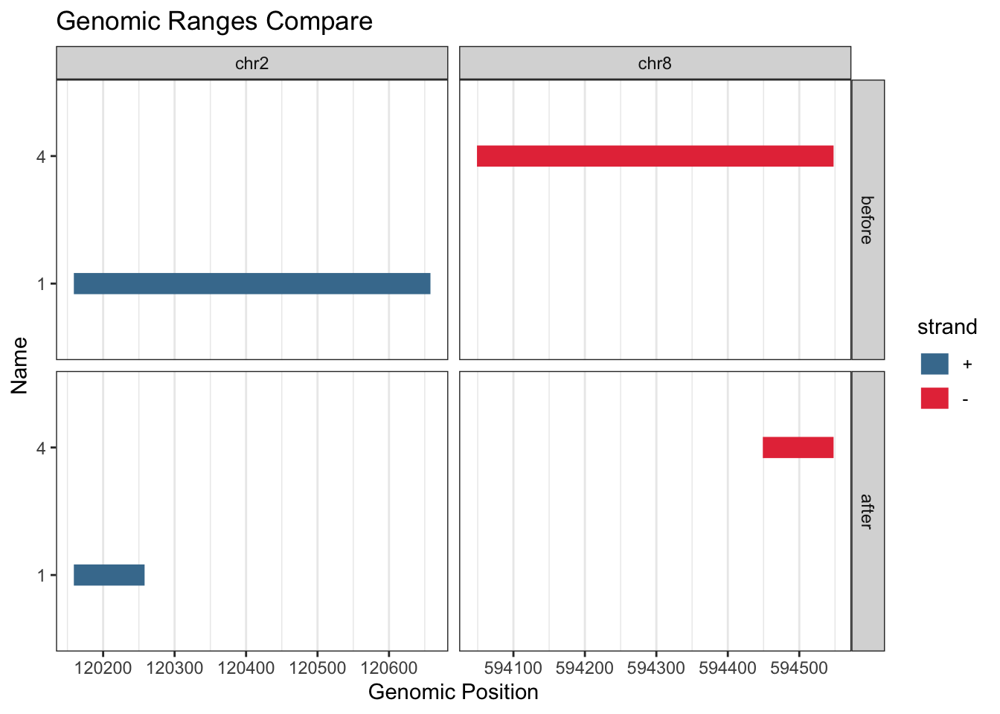
The resize() function does take strand into account and will resize the intervals in the opposite direction if they are on the minus strand.
Many of the functions in GenomicRanges have an ignore.strand argument. This is normally set to FALSE by default but you can change this to TRUE if you want to ignore strand information.
The flank() function can be used to get the flanking regions around the start or end of the intervals.
## Get the flanking region around the start of the feature
flank(gr2, 1000)GRanges object with 5 ranges and 1 metadata column:
seqnames ranges strand | names
<Rle> <IRanges> <Rle> | <integer>
[1] chr2 61999-62998 + | 1
[2] chr4 965922-966921 + | 2
[3] chr6 662790-663789 + | 3
[4] chr8 714139-715138 - | 4
[5] chr10 711227-712226 - | 5
-------
seqinfo: 5 sequences from an unspecified genome; no seqlengthspg2(gr2, flank(gr2, 1000))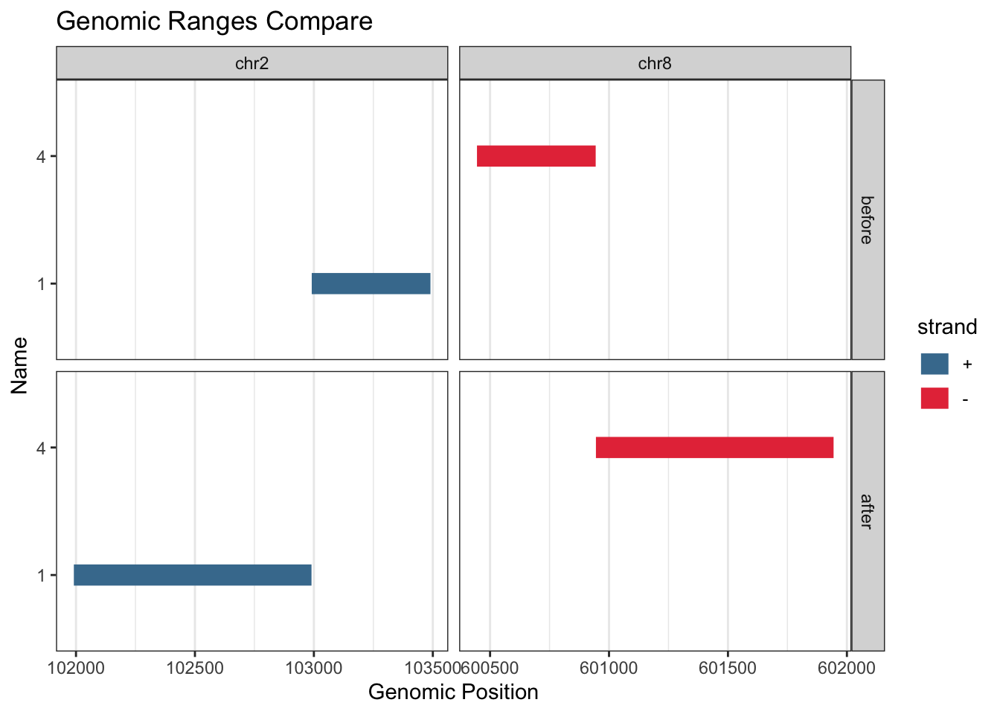
## Get the flanking region around the end of the feature
flank(gr2, 1000, start = F)GRanges object with 5 ranges and 1 metadata column:
seqnames ranges strand | names
<Rle> <IRanges> <Rle> | <integer>
[1] chr2 63499-64498 + | 1
[2] chr4 967422-968421 + | 2
[3] chr6 664290-665289 + | 3
[4] chr8 712639-713638 - | 4
[5] chr10 709727-710726 - | 5
-------
seqinfo: 5 sequences from an unspecified genome; no seqlengthspg2(gr2, flank(gr2, 1000, start = F))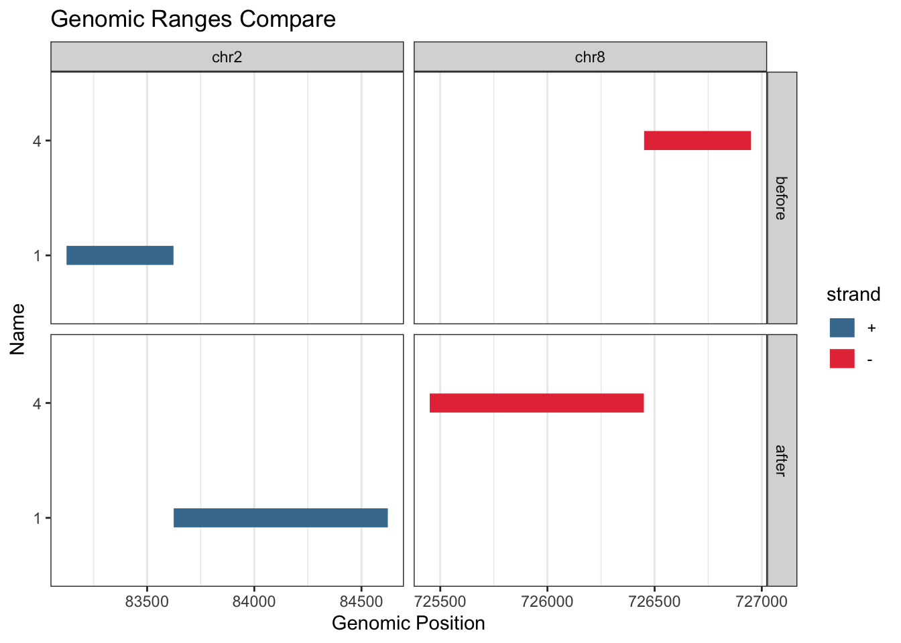
## Get the flanking regions either side of the start coordinate
flank(gr2, 1000, both = T)GRanges object with 5 ranges and 1 metadata column:
seqnames ranges strand | names
<Rle> <IRanges> <Rle> | <integer>
[1] chr2 61999-63998 + | 1
[2] chr4 965922-967921 + | 2
[3] chr6 662790-664789 + | 3
[4] chr8 713139-715138 - | 4
[5] chr10 710227-712226 - | 5
-------
seqinfo: 5 sequences from an unspecified genome; no seqlengthspg2(gr2, flank(gr2, 1000, both = T))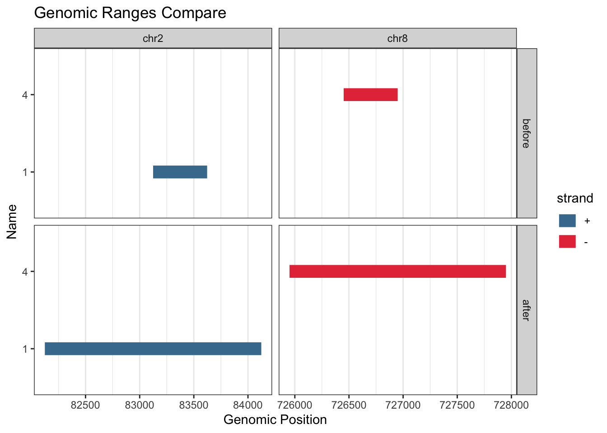
## Get the flanking regions either side of the end coordinate
flank(gr2, 1000, both = T, start = F)GRanges object with 5 ranges and 1 metadata column:
seqnames ranges strand | names
<Rle> <IRanges> <Rle> | <integer>
[1] chr2 62499-64498 + | 1
[2] chr4 966422-968421 + | 2
[3] chr6 663290-665289 + | 3
[4] chr8 712639-714638 - | 4
[5] chr10 709727-711726 - | 5
-------
seqinfo: 5 sequences from an unspecified genome; no seqlengthspg2(gr2, flank(gr2, 1000, both = T, start = F))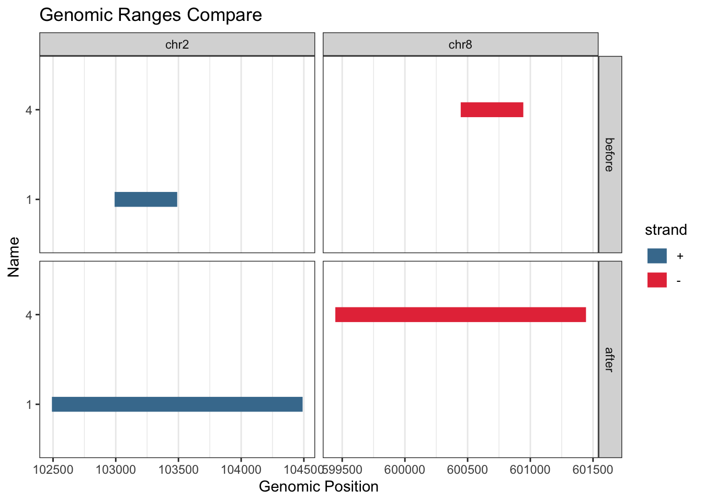
## Get the flanking regions either side of the end coordinate, ignoring strand
flank(gr2, 1000, both = T, start = F, ignore.strand = T)GRanges object with 5 ranges and 1 metadata column:
seqnames ranges strand | names
<Rle> <IRanges> <Rle> | <integer>
[1] chr2 62499-64498 + | 1
[2] chr4 966422-968421 + | 2
[3] chr6 663290-665289 + | 3
[4] chr8 713139-715138 - | 4
[5] chr10 710227-712226 - | 5
-------
seqinfo: 5 sequences from an unspecified genome; no seqlengthspg2(gr2, flank(gr2, 1000, both = T, start = F, ignore.strand = T))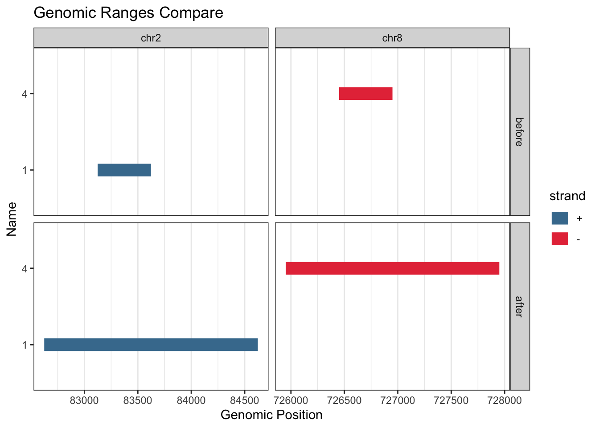
The promoters() and terminators() functions are wrappers for the flank() function to simplify getting regions around the start or ends of intervals. By default, promoters() gets the 2000bp upstream and 200bp downstream of the start coordinate but you can change this with the upstream and downstream arguments.
## Get the promoter region around the start of the feature
promoters(gr2)GRanges object with 5 ranges and 1 metadata column:
seqnames ranges strand | names
<Rle> <IRanges> <Rle> | <integer>
[1] chr2 60999-63198 + | 1
[2] chr4 964922-967121 + | 2
[3] chr6 661790-663989 + | 3
[4] chr8 713939-716138 - | 4
[5] chr10 711027-713226 - | 5
-------
seqinfo: 5 sequences from an unspecified genome; no seqlengthspg2(gr2, promoters(gr2))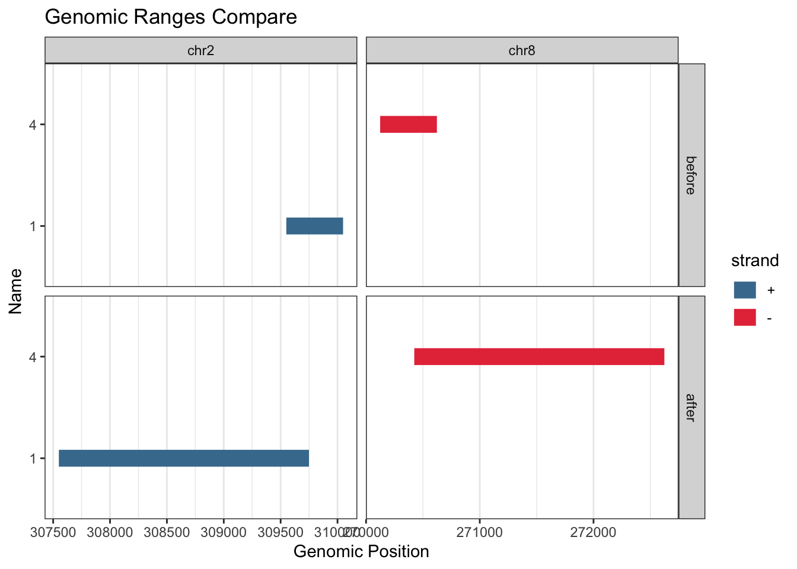
## Get the promoter region around the start of the feature
promoters(gr2, upstream = 100, downstream=100)GRanges object with 5 ranges and 1 metadata column:
seqnames ranges strand | names
<Rle> <IRanges> <Rle> | <integer>
[1] chr2 62899-63098 + | 1
[2] chr4 966822-967021 + | 2
[3] chr6 663690-663889 + | 3
[4] chr8 714039-714238 - | 4
[5] chr10 711127-711326 - | 5
-------
seqinfo: 5 sequences from an unspecified genome; no seqlengthspg2(gr2, promoters(gr2, upstream = 100, downstream=100))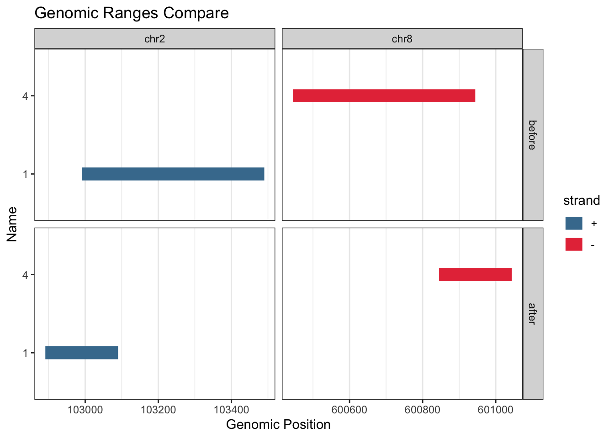
## Get the terminator region around the end of the feature
terminators(gr2, upstream = 10, downstream=100)GRanges object with 5 ranges and 1 metadata column:
seqnames ranges strand | names
<Rle> <IRanges> <Rle> | <integer>
[1] chr2 63488-63597 + | 1
[2] chr4 967411-967520 + | 2
[3] chr6 664279-664388 + | 3
[4] chr8 713540-713649 - | 4
[5] chr10 710628-710737 - | 5
-------
seqinfo: 5 sequences from an unspecified genome; no seqlengthspg2(gr2, terminators(gr2, upstream = 10, downstream=100))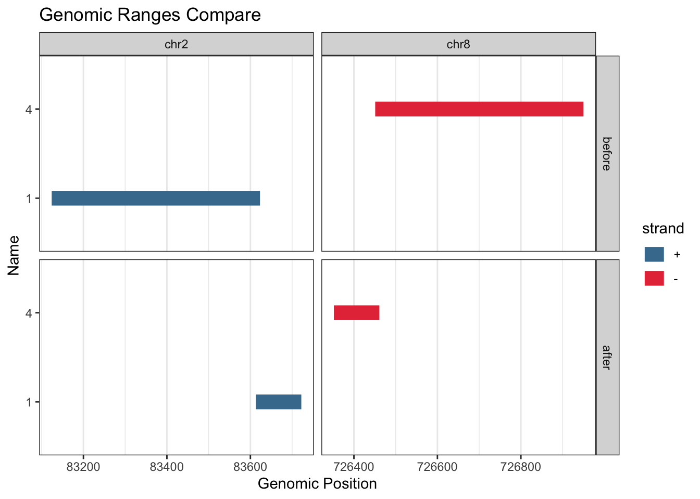
Finding overlaps between GRanges
It is often interesting to find the overlaps between genomic intervals.
Firstly, we may have overlapping intervals within a single GRanges object. We can use the reduce() function to merge these into single intervals. This is often a required step for downstream analysis where you want to avoid counting the same region multiple times. For instance, you may have overlapping ChIP-seq peaks that you want to merge together before counting the number of reads in each peak.
## Reduce overlapping ranges into single ranges
reduce(gr)GRanges object with 3 ranges and 0 metadata columns:
seqnames ranges strand
<Rle> <IRanges> <Rle>
[1] chr2 100-300 *
[2] chr6 300-500 *
[3] chr10 500-600 *
-------
seqinfo: 3 sequences from an unspecified genome; no seqlengthspg2(gr, reduce(gr), n=5)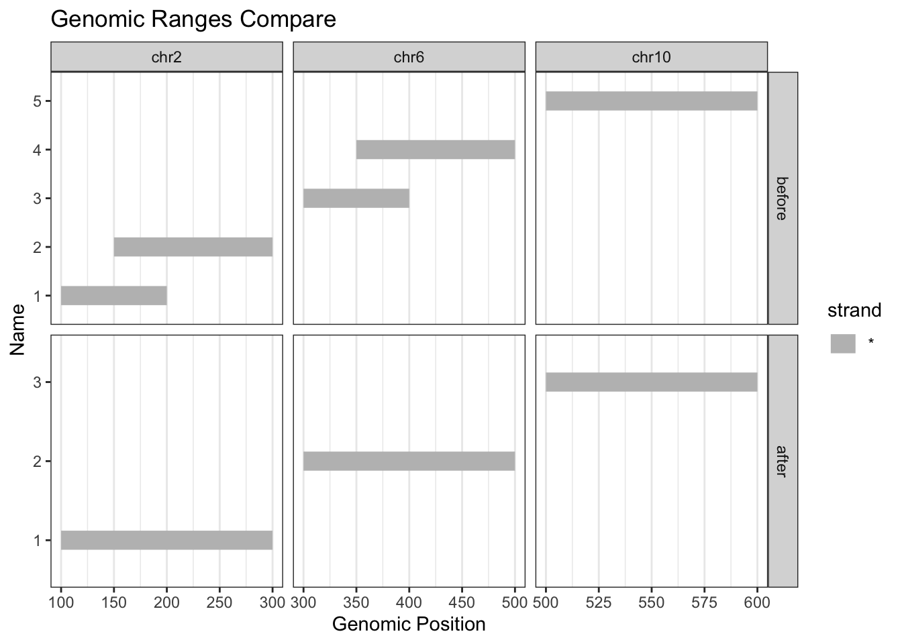
## Create a new GRanges object with overlapping intervals on different strands
gr4 <- gr
strand(gr4) <- c("+", "-", "+", "-", "+")
gr4GRanges object with 5 ranges and 2 metadata columns:
seqnames ranges strand | names GC
<Rle> <IRanges> <Rle> | <numeric> <numeric>
[1] chr2 100-200 + | 1 1.00
[2] chr2 150-300 - | 2 0.75
[3] chr6 300-400 + | 3 0.50
[4] chr6 350-500 - | 4 0.25
[5] chr10 500-600 + | 5 0.00
-------
seqinfo: 3 sequences from an unspecified genome; no seqlengthsreduce(gr4)GRanges object with 5 ranges and 0 metadata columns:
seqnames ranges strand
<Rle> <IRanges> <Rle>
[1] chr2 100-200 +
[2] chr2 150-300 -
[3] chr6 300-400 +
[4] chr6 350-500 -
[5] chr10 500-600 +
-------
seqinfo: 3 sequences from an unspecified genome; no seqlengthspg2(gr4, reduce(gr4), n=2)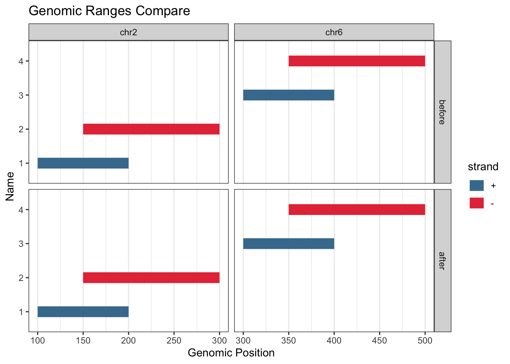
Overlaps on opposite strands are not merged by default but we can change this with the ignore.strand argument.
reduce(gr4, ignore.strand=T)GRanges object with 3 ranges and 0 metadata columns:
seqnames ranges strand
<Rle> <IRanges> <Rle>
[1] chr2 100-300 *
[2] chr6 300-500 *
[3] chr10 500-600 *
-------
seqinfo: 3 sequences from an unspecified genome; no seqlengthspg2(gr4, reduce(gr4, ignore.strand=T), n=2)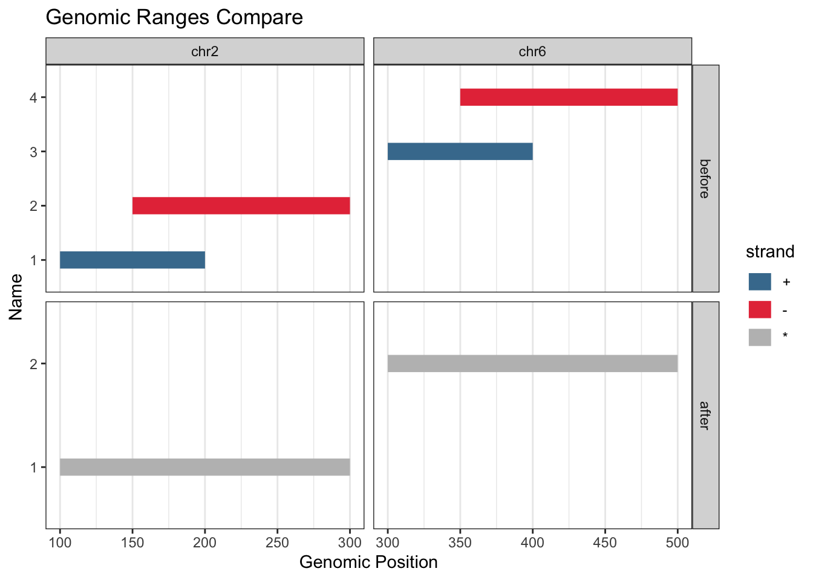
Because we used ignore.strand=T, the intervals on opposite strands are now merged together and our reduced ranges are now unstranded. This is something to be careful about when using the ignore.strand argument in any of the functions in GenomicRanges.
GenomicRanges also has several functions to find the overlaps between two different sets of genomic intervals. For instance, we might want to know which ChIP-seq peaks overlap with gene promoters or which SNPs overlap with exons.
Let’s create some new intervals of genes and peaks to visualise the overlaps between them.
## Create a new GRanges object with different co-ordinates
genes <- GRanges(seqnames ="chr1",
ranges = IRanges(start = c(100,300,400) ,
end = c(200,350,480)),
strand = c("+", "-", "+"),
names= c("geneA","geneB","geneC")
)
peaks <- GRanges(seqnames ="chr1",
ranges = IRanges(start = c(80,150,280,500) ,
end = c(120,170,320,520)),
names= c("peak1","peak2","peak3","peak4")
)
## Plot the genes and peaks to visualise the overlaps
p_genes <- pg(genes) + xlim(0,520)
p_peaks <- pg(peaks) + xlim(0,520)
p_genes/p_peaks + plot_layout(guides = "collect")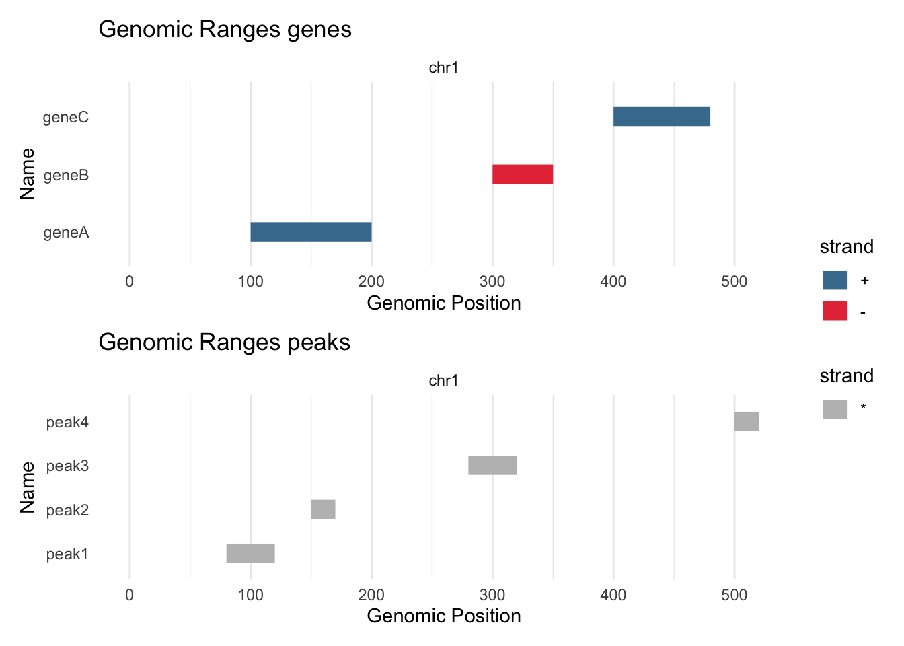
The findOverlaps() function gives the indices of the overlapping intervals between two GRanges objects.
## Find the overlaps between 2 sets of GRanges
fo <- findOverlaps(query = genes, subject = peaks)
foHits object with 3 hits and 0 metadata columns:
queryHits subjectHits
<integer> <integer>
[1] 1 1
[2] 1 2
[3] 2 3
-------
queryLength: 3 / subjectLength: 4The query is the GRanges object supplied as the first argument (genes) and the subject is the GRanges object supplied as the second argument (peaks).
We can see that genes[1] overlaps with peaks[1] and peaks[2], and genes[2] overlaps with peaks[3]. The output is a Hits object which contains the indices of the overlapping intervals in the query and subject GRanges objects.
## Use the subjectHits or queryHits functions to extract columns from the output
subjectHits(fo)[1] 1 2 3queryHits(fo)[1] 1 1 2We can use these to extract the overlapping intervals from the original GRanges objects.
## Extract the genes that overlap with peaks
## We use unique() so intervals are not repeated
genes_with_peaks <- genes[queryHits(fo) |> unique()]
genes_with_peaksGRanges object with 2 ranges and 1 metadata column:
seqnames ranges strand | names
<Rle> <IRanges> <Rle> | <character>
[1] chr1 100-200 + | geneA
[2] chr1 300-350 - | geneB
-------
seqinfo: 1 sequence from an unspecified genome; no seqlengths## Plot the genese with peaks
p_genes_peaks <- pg(genes_with_peaks) + xlim(0,520)
p_genes / p_peaks / p_genes_peaks + plot_layout(guides = "collect")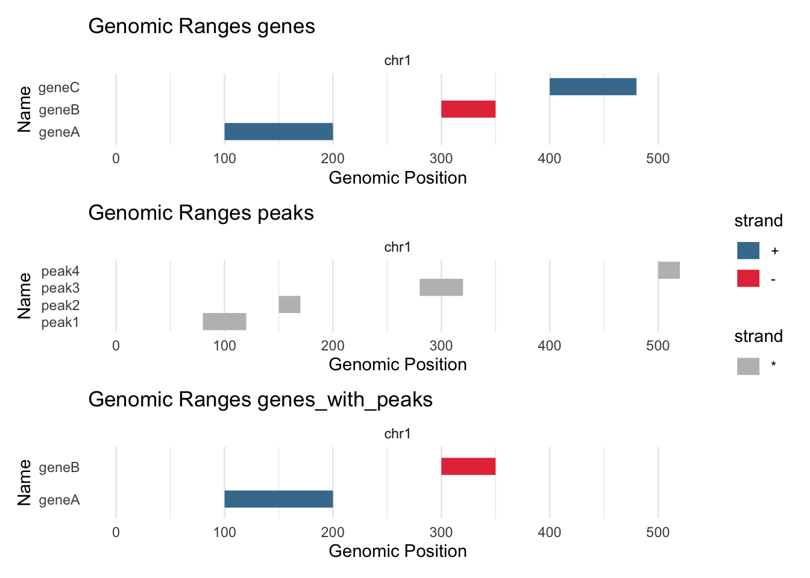
## Extract the peaks that overlap with genes
## We use unique() so intervals are not repeated
peaks[subjectHits(fo) |> unique()]GRanges object with 3 ranges and 1 metadata column:
seqnames ranges strand | names
<Rle> <IRanges> <Rle> | <character>
[1] chr1 80-120 * | peak1
[2] chr1 150-170 * | peak2
[3] chr1 280-320 * | peak3
-------
seqinfo: 1 sequence from an unspecified genome; no seqlengthsSet functions on GRanges
GenomicRanges can perform set functions on the intervals in two GRanges objects. For instance, we can get the intersecting regions between two sets of genomic intervals with the intersect() function.
## Get the overlapping regions between peaks and genes
gr_intersect <- GenomicRanges::intersect(genes,peaks)
gr_intersectGRanges object with 0 ranges and 0 metadata columns:
seqnames ranges strand
<Rle> <IRanges> <Rle>
-------
seqinfo: 1 sequence from an unspecified genome; no seqlengthsStrange. Our intersect is empty. This is because the intersect() function takes strand into account by default and our peaks are unstranded. We can change this with the ignore.strand argument. Notice how unstranded features behave differently in different functions. This is a big gotcha when using GenomicRanges. Always check the documentation and your results!
## Get the overlapping regions between peaks and genes
gr_intersect <- GenomicRanges::intersect(genes,peaks,ignore.strand=T)
gr_intersectGRanges object with 3 ranges and 0 metadata columns:
seqnames ranges strand
<Rle> <IRanges> <Rle>
[1] chr1 100-120 *
[2] chr1 150-170 *
[3] chr1 300-320 *
-------
seqinfo: 1 sequence from an unspecified genome; no seqlengthsp_intersect <- pg(gr_intersect) + xlim(0,520)
p_genes / p_peaks / p_intersect + plot_layout(guides = "collect")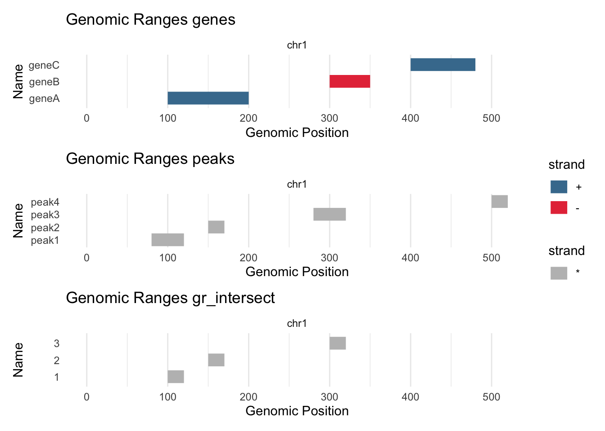
What happens if we set all the peaks to be on the minus strand?
strand(peaks) = "-"
GenomicRanges::intersect(peaks, genes)GRanges object with 1 range and 0 metadata columns:
seqnames ranges strand
<Rle> <IRanges> <Rle>
[1] chr1 300-320 -
-------
seqinfo: 1 sequence from an unspecified genome; no seqlengthsNow we only get a single intersecting region.
Further Learning
There are many other functions to perform set operations and overlaps on GRanges objects such as
union(): Get the union of two sets of genomic intervalssetdiff(): Get the regions in one set of genomic intervals that do not overlap with the other setdisjoin(): Get the non-overlapping regions from a single set of genomic intervalssetequal(): Check if two sets of genomic intervals are the samesubsetByOverlaps(): Subset a GRanges object by overlaps with another GRanges object
If you need to perform a specific operation on genomic intervals there is probably an existing function or combination of functions. Check the documentation or search the web.
Operations on GRangesList objects
When we have multiple GRanges in a GRangesList, we can perform operations on all of them at once.
## We can perform operations on all items in the list with a single command
shift(gl, 100)GRangesList object of length 2:
$Experiment_1
GRanges object with 5 ranges and 1 metadata column:
seqnames ranges strand | names
<Rle> <IRanges> <Rle> | <numeric>
[1] chr2 200-300 * | 1
[2] chr2 250-400 * | 2
[3] chr6 400-500 * | 3
[4] chr6 450-600 * | 4
[5] chr10 600-700 * | 5
-------
seqinfo: 5 sequences from an unspecified genome; no seqlengths
$Experiment_2
GRanges object with 5 ranges and 1 metadata column:
seqnames ranges strand | names
<Rle> <IRanges> <Rle> | <numeric>
[1] chr2 63099-63598 + | 1
[2] chr4 967022-967521 + | 2
[3] chr6 663890-664389 + | 3
[4] chr8 713739-714238 - | 4
[5] chr10 710827-711326 - | 5
-------
seqinfo: 5 sequences from an unspecified genome; no seqlengthsChallenge:
Create new GRanges objects called genes and peaks.
genes <- GRanges(seqnames = c("chr2", "chr5", "chr6", "chr8","chr10"),
ranges = IRanges(start = c(250000,3260,670000,36100,129865), width=3000),
strand= c("+","+","-","-","+"),
name=c("geneA","geneB","geneC","geneD","geneE"))
peaks <- GRanges(seqnames = c("chr2","chr4","chr6","chr8","chr10"),
ranges = IRanges(start = c(250124,102687,670888,39129,605438) ,
end = c(250623,103186,671387,39628,605937)),
strand = c("+", "+", "+", "-", "-"),
name= c("peak1","peak2","peak3","peak4","peak5"))The features in peaks are binding sites of our protein of interest. Which of the genes are bound by this protein at the promoter region?
Solution.
Solution:
## Get the gene promoters
promoters <- promoters(genes)
## Overlap promoters and peaks
overlaps <- findOverlaps(query = promoters, subject = peaks)
## Get the unique query hits
qh <- queryHits(overlaps) |> unique()
## Subset genes by the query hits
genes[qh]GRanges object with 2 ranges and 1 metadata column:
seqnames ranges strand | name
<Rle> <IRanges> <Rle> | <character>
[1] chr2 250000-252999 + | geneA
[2] chr8 36100-39099 - | geneD
-------
seqinfo: 5 sequences from an unspecified genome; no seqlengthsNote that it is also possible to string together GRanges operations with R pipes e.g.
qh <- findOverlaps(query = promoters(genes), subject = peaks) |>
queryHits() |>
unique()
genes[qh]GRanges object with 2 ranges and 1 metadata column:
seqnames ranges strand | name
<Rle> <IRanges> <Rle> | <character>
[1] chr2 250000-252999 + | geneA
[2] chr8 36100-39099 - | geneD
-------
seqinfo: 5 sequences from an unspecified genome; no seqlengthsImporting files as Genomic Ranges
The genomation package has several useful functions to import annotation and sequencing files into R as GRanges objects.
We are going to work with annotation files from the Human hg19 reference genome. The file contains gene annotations downloaded from the Ensembl database in bed format.
Load the genomation library and use the readBed() function to read in the file.
library(genomation)
## Read in a bed file from your data folder
hg19.genes <- readBed("data/Ensembl.GRCh37.74.edited.genes.strict.bed")
## Read in a bed file from the web
#hg19.genes <- readBed("http://bifx-core.bio.ed.ac.uk/genomes/human/hg19/annotation/Ensembl.GRCh37.74.edited.genes.strict.bed")
## Inspect the object
hg19.genesGRanges object with 57773 ranges and 2 metadata columns:
seqnames ranges strand | score name
<Rle> <IRanges> <Rle> | <integer> <character>
[1] chr13 23551995-23552136 - | 0 ENSG00000223116
[2] chr13 23708314-23708703 + | 0 ENSG00000233440
[3] chr13 23726726-23726825 - | 0 ENSG00000207157
[4] chr13 23743975-23744736 - | 0 ENSG00000229483
[5] chr13 23791572-23791673 - | 0 ENSG00000252952
... ... ... ... . ... ...
[57769] chr3 14313874-14345345 - | 0 ENSG00000255021
[57770] chr3 14389952-14394068 - | 0 ENSG00000251576
[57771] chr3 14436149-14436257 + | 0 ENSG00000199609
[57772] chr3 14530620-14583588 - | 0 ENSG00000144596
[57773] chr2 61704985-61765761 - | 0 ENSG00000082898
-------
seqinfo: 25 sequences from an unspecified genome; no seqlengthsThis is a much bigger GRanges object with 57773 intervals representing gene annotations.
Note that the GRanges object has a slot for seqinfo which can store the lengths of each chromosome and the genome they are derived from.
Some functions make use of seqinfo. For instance, when calculating the gaps in coverage of a GRanges object we need to know where the end of each chromosome is. This information is currently empty but we will see how to update it later.
seqinfo(hg19.genes)Seqinfo object with 25 sequences from an unspecified genome; no seqlengths:
seqnames seqlengths isCircular genome
chr1 <NA> <NA> <NA>
chr2 <NA> <NA> <NA>
chr3 <NA> <NA> <NA>
chr4 <NA> <NA> <NA>
chr5 <NA> <NA> <NA>
... ... ... ...
chr21 <NA> <NA> <NA>
chr22 <NA> <NA> <NA>
chrX <NA> <NA> <NA>
chrY <NA> <NA> <NA>
chrM <NA> <NA> <NA>We can also use genomation to read in files that are not in a standard format using the readGeneric() function. Let’s update our hg19.genes object by reading a file with more information (metadata) about each gene.
This file contains the same gene annotations along with additional columns of information. The file is not in the strict bed format so we need to use the readGeneric() function.
The meta.cols argument allows us to specify the column numbers to be read as metadata and how to name these. It takes a list of column numbers and the names we want to give them.
## This file contains the same gene annotations but has some extra columns in the table which we can also import.
hg19.genes <- readGeneric("data/Ensembl.GRCh37.74.edited.genes.bed",
chr = 1,
start = 2,
end = 3,
strand = 6,
meta.cols = list(name = 4,
symbol = 5,
biotype = 7))
hg19.genesGRanges object with 57773 ranges and 3 metadata columns:
seqnames ranges strand | name symbol
<Rle> <IRanges> <Rle> | <character> <character>
[1] chr13 23551994-23552136 - | ENSG00000223116 AL157931.1
[2] chr13 23708313-23708703 + | ENSG00000233440 HMGA1P6
[3] chr13 23726725-23726825 - | ENSG00000207157 RNY3P4
[4] chr13 23743974-23744736 - | ENSG00000229483 LINC00362
[5] chr13 23791571-23791673 - | ENSG00000252952 RNU6-58P
... ... ... ... . ... ...
[57769] chr3 14313873-14345345 - | ENSG00000255021 RP11-536I6.2
[57770] chr3 14389951-14394068 - | ENSG00000251576 RP11-536I6.1
[57771] chr3 14436148-14436257 + | ENSG00000199609 RNA5SP124
[57772] chr3 14530619-14583588 - | ENSG00000144596 GRIP2
[57773] chr2 61704984-61765761 - | ENSG00000082898 XPO1
biotype
<character>
[1] miRNA
[2] pseudogene
[3] misc_RNA
[4] lincRNA
[5] snRNA
... ...
[57769] lincRNA
[57770] lincRNA
[57771] rRNA
[57772] processed_transcript
[57773] protein_coding
-------
seqinfo: 25 sequences from an unspecified genome; no seqlengthsWe can use the metadata to filter our GRanges object using the subset() function. Let’s get all of the protein coding genes.
##Get all protein coding genes
hg19.pc.genes <- subset(hg19.genes, biotype == "protein_coding")
hg19.pc.genesGRanges object with 20327 ranges and 3 metadata columns:
seqnames ranges strand | name symbol
<Rle> <IRanges> <Rle> | <character> <character>
[1] chr15 20737094-20747114 - | ENSG00000215405 GOLGA6L6
[2] chr15 21004687-21005367 + | ENSG00000268343 AC012414.1
[3] chr15 21040701-21071643 - | ENSG00000230031 POTEB2
[4] chr15 49280673-49338760 - | ENSG00000138593 SECISBP2L
[5] chr15 22011370-22012050 + | ENSG00000268531 DKFZP547L112
... ... ... ... . ... ...
[20323] chr17 43224684-43229468 + | ENSG00000186834 HEXIM1
[20324] chr17 43238067-43247407 + | ENSG00000168517 HEXIM2
[20325] chr17 43298811-43324687 + | ENSG00000184922 FMNL1
[20326] chr10 22823778-23003484 - | ENSG00000150867 PIP4K2A
[20327] chr2 61704984-61765761 - | ENSG00000082898 XPO1
biotype
<character>
[1] protein_coding
[2] protein_coding
[3] protein_coding
[4] protein_coding
[5] protein_coding
... ...
[20323] protein_coding
[20324] protein_coding
[20325] protein_coding
[20326] protein_coding
[20327] protein_coding
-------
seqinfo: 25 sequences from an unspecified genome; no seqlengthsThere are just over 20000 annotated protein coding genes in the human genome, so this seems about right.
Further Learning
The genomation package has several other import functions for different types of genomic data:
readBam(): Import sequencing alignments.readNarrowPeak()andreadBroadPeak(): Import ChIP-seq peak regions from commonly used peak caller tools.gffToGRanges(): Import GFF annotation files.readTranscriptFeatures(): Import a bed file and split it into promoter, exon and intron regions.
Take a look at the genomation manual and documentation to learn more.
Key points
- Store genomic co-ordinates and metadata in GRanges objects
- Access information and perform operations on GRanges with functions from the GenomicRanges library.
- The genomation library has functions to easily load many types of genomics datasets.
- All of the Bioconductor packages have very good documentation!